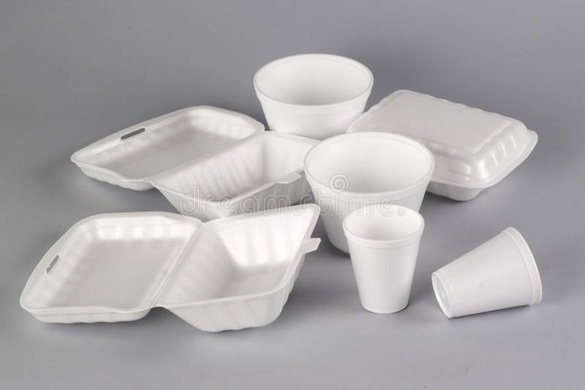

Styrofoam
Discover the impact and creativity of Styrofoam
Fun Facts

Fun Fact :
1.
Styrofoam is made up of about 95–98% air, which makes it super lightweight
2.
It’s not biodegradable — and can persist in the environment for hundreds of years
3.
Tiny styrofoam pieces (microplastics) are often eaten by fish, entering the food chain
4.
Although hard to recycle, some companies now use compactors to turn it into building materials.
5.
Styrofoam dissolves easily in acetone, showing that it’s mostly trapped air and polymer!